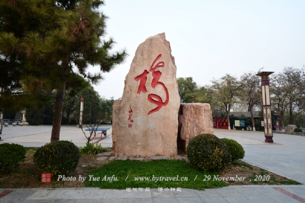

赵县景点-赵州桥
赵州桥又称“安济桥”，在河北省赵县城南2.5公里处坐落在河北省赵县洨河上.建于隋代（公元581－618年）大业年间（公元605－618年），由著名匠师李春设计和建造，距今已有约1400年的历史，是当今世界上现存最早、保存最完善的古代敞肩石拱桥。

赵县景点-柏林禅寺
柏林禅寺坐落于河北省赵县县城（古称赵州）东南角，与天下第一桥赵州桥遥遥相望，它最早建于汉献帝建安年间（196-220），古称观音院，南宋为永安院，金代名柏林禅院，自元代起即称柏林禅寺。在漫长的历史长河中，这座古刹虽几经兴衰，却仍然香火绵延，高僧辈出。
赵县景点-永通桥
永通桥为单跨圆弧敞肩石拱桥，桥面两旁有正方形望柱22根，栏板下面的两端垫在石墩上，中间悬空。板面有浮雕，内容以人物、花卉、鸟兽之主；桥栏杆上，雕有河神像，造型优美；南北两面的小墩上分别雕有飞马和游鱼，雕工相当精致，多为仿古之作，因小石桥在历代均有修缮，所以桥上小石雕的风格手法也不尽相同。
赵县景点-赵州陀罗尼经幢
陀罗尼经幢位于河北省赵县县城内。赵州陀罗尼经幢是在北宋景祐五年（1038年）由赵州人王德成建造的，陀罗尼经幢全部用石料雕琢而成，共七级，平面呈八角形，高约18米，是中国现存石经幢中时代最早的一座，也是最高的一座。
赵县景点-永通桥公园
永通桥公园位于赵县城西门与西关之间。依托全国重点文物保护单位永通桥而建。总体规划占地面积十五点八公顷，其中一期占地五点四公顷。经过两年时间的精心设计和施工，于二零零九年七月完成一期工程并对公众开放。永通桥公园的规划设计，突出了保护古城文化底蕴，注重生态保护，人文景观与自然风貌有机融合的理念.

赵县景点-赵县古墙遗址园
赵县古城墙遗址园，是石家庄市唯一一处以古城墙保护为主题的公园。公园占地140亩，充分利用残存的古城墙和护城河，以古赵州十景中的“南畦稻熟”“洨川环翠”为主题展开设计。在公园建设中注重融入历史和文化元素，使文物保护与娱乐休闲相得益彰。城墙是中国古代城市传统防御设施。